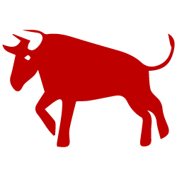

MAIN PAGE

The Ox occupies the second position in the Chinese Zodiac.
- Lucky Colors: white, yellow, green
- Lucky Numbers: 1, 4
- Lucky Flowers: tulip, morning glory, peach blossom
- Year of Birth: 1913, 1925, 1937, 1949, 1961, 1973, 1985, 1997, 2009, 2021
The Oxes' Personality: Diligent, Dependable...
Oxes are known for diligence, dependability, strength and determination. Having an honest nature, Oxes have a strong patriotism for their country, have ideals and ambitions for life, and attach importance to family and work. These things reflect the traditional characteristics of conservatives. Women belonging to the Ox zodiac sign are traditional, faithful wives, who attach great importance to their children's education.